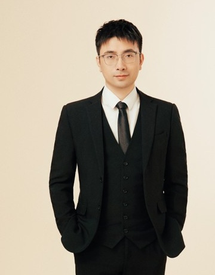

MECHANICS · SMART SOFT MATERIALS · MULTIPHYSICS
Yipin Su
苏益品
Researcher, Huanjiang Laboratory
Zhejiang University “Platform 100 Talents” Researcher · Ph.D. Supervisor
National Young Talent (Overseas) · Zhejiang Provincial Distinguished Young Scholar

About
My research focuses on multiphysics mechanics of smart soft materials and structures, including dielectric elastomers, magneto-active hydrogels and fiber-reinforced soft electroactive materials, with emphasis on nonlinear deformation, instability, waves and vibrations, and mechanics-enabled smart sensing and devices.
Research Interests
01
Smart Soft Materials & Multiphysics
02
Instability of Soft Materials
03
Waves & Vibrations
04